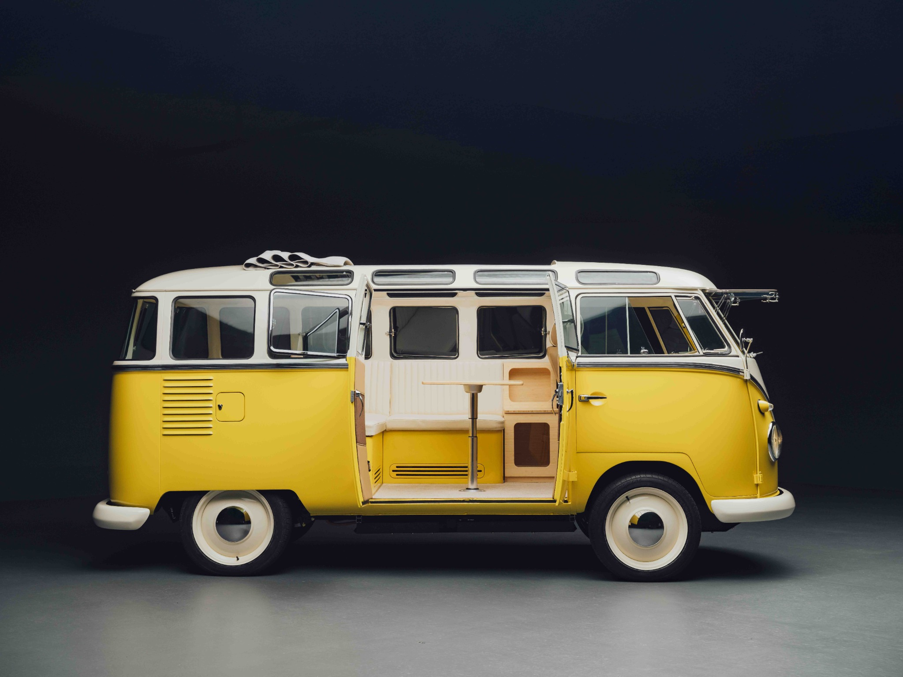
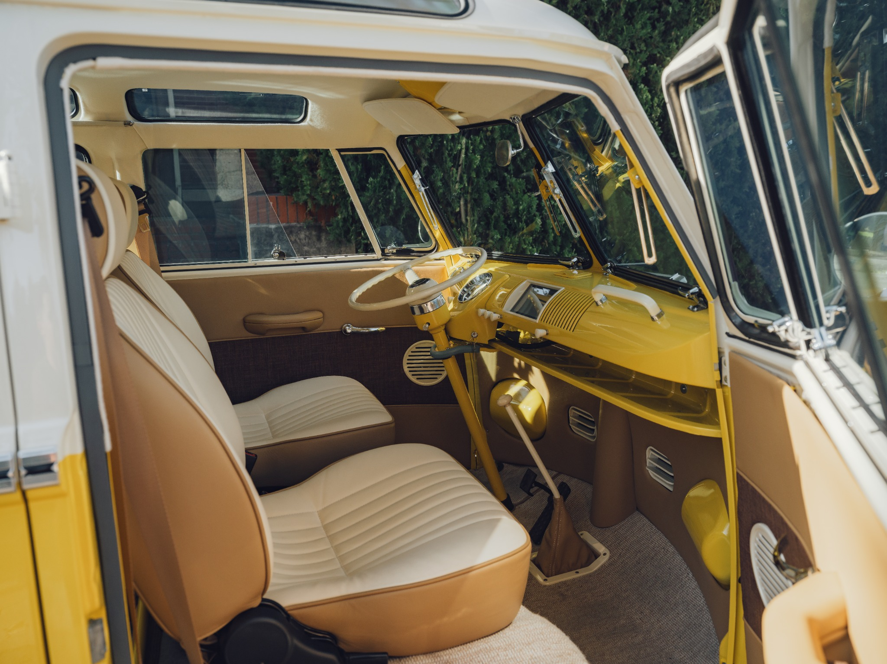
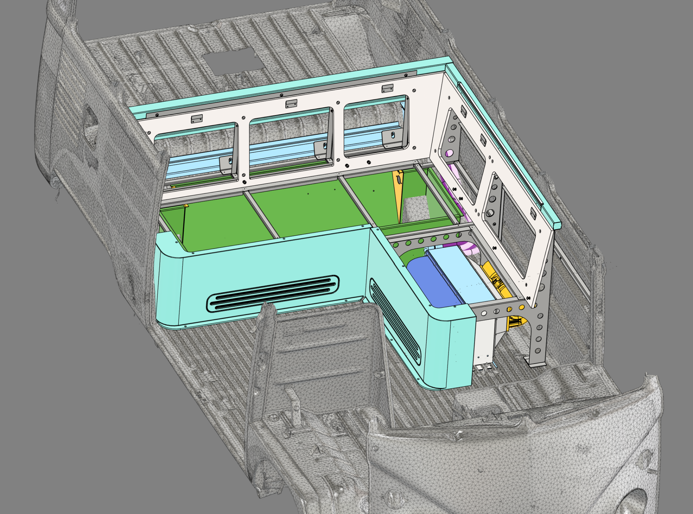
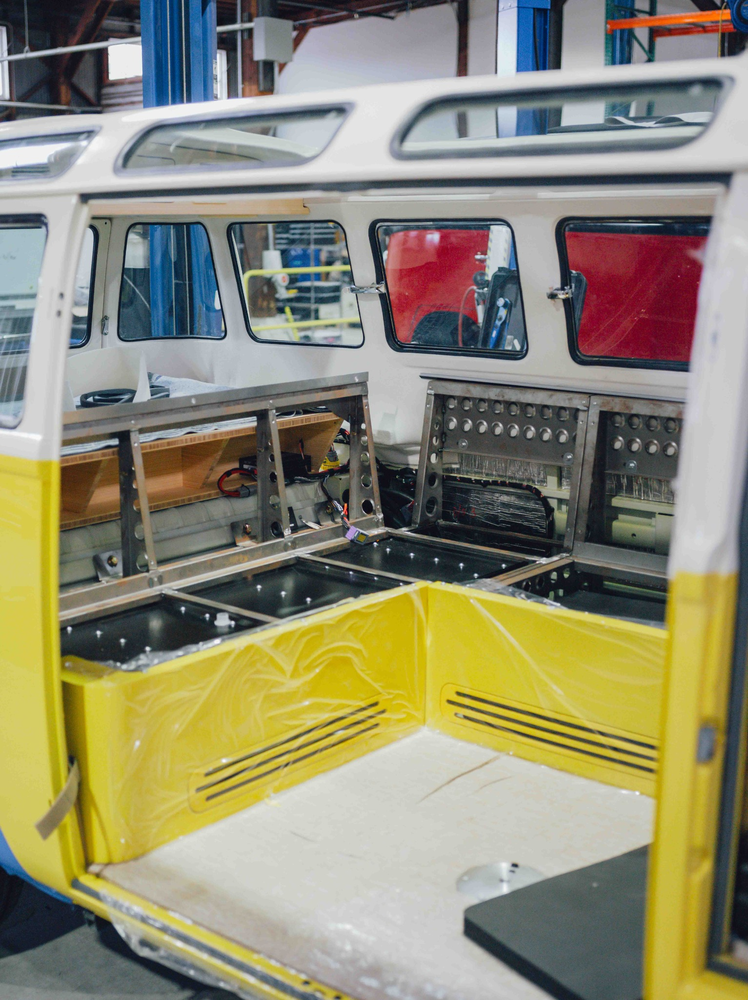
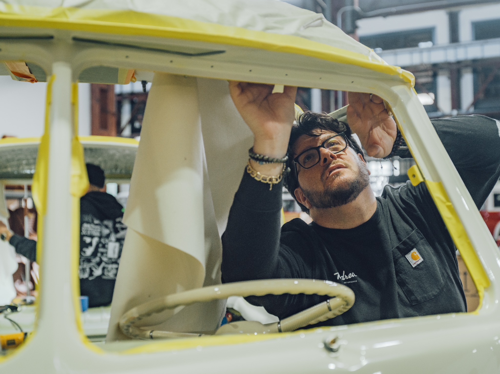
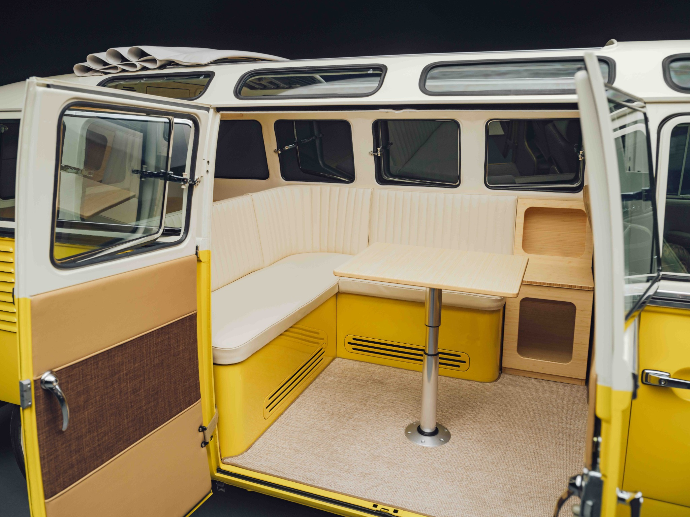
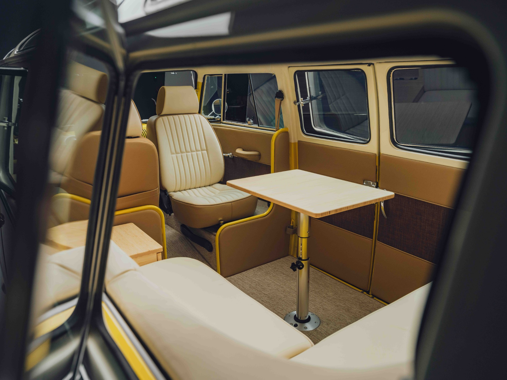
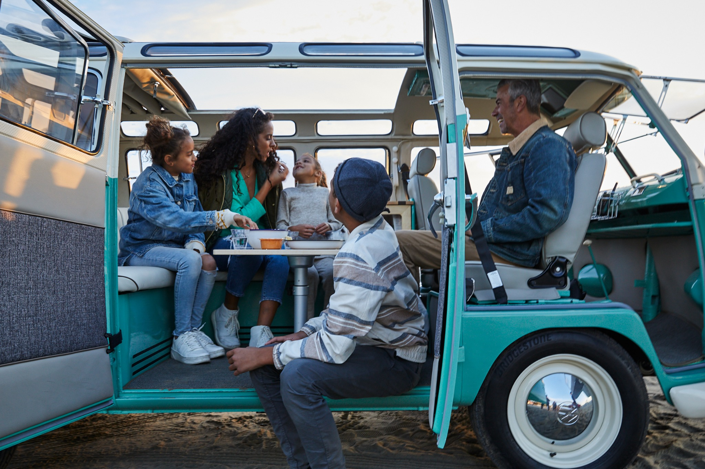

EV VW Bus Interior Development
Translating a visually developed one-off prototype into a documented, supplier-ready interior system designed for repeatable low-volume production.

Preserve the experience. Rebuild the system.

Resolving the architecture beneath the visible surfaces.

Moving from prototype craftsmanship to controlled assemblies.


Balancing design, packaging, suppliers, quality, and cost.
Architecture & Packaging
Reworked interior architecture around the battery, HVAC systems, and passenger-seat swivel while protecting the intended cabin experience.
Materials & Construction
Led material selection and approval with Design, balancing appearance, durability, manufacturability, supplier capability, and production needs.
Supplier Industrialization
Down-selected and developed outside partners for soft trim, seating, interior components, and furniture with emphasis on repeatability and scale.
Production Definition
Established drawings, specifications, PLM records, quality criteria, process documentation, and change control for production-intent components.
A cohesive cabin built from controlled subsystems.


